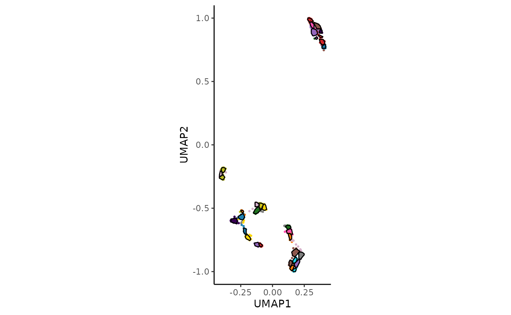
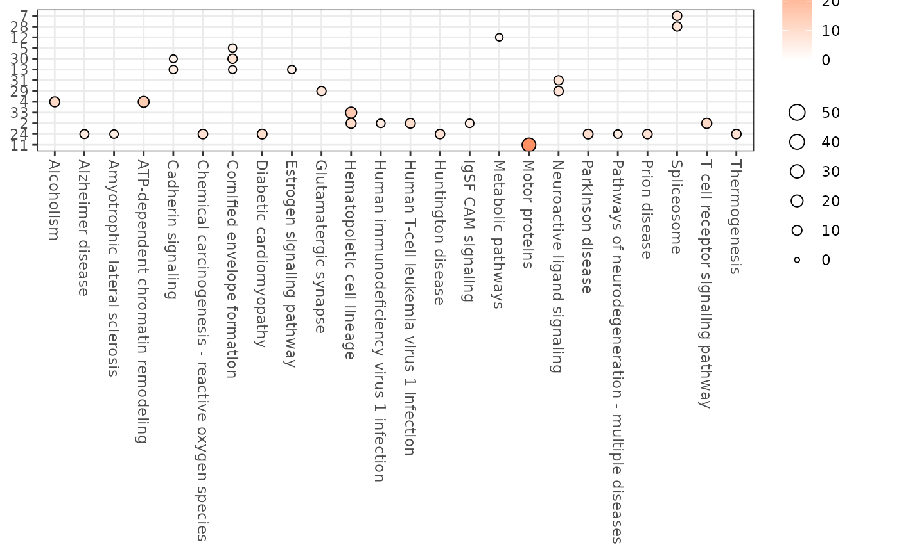
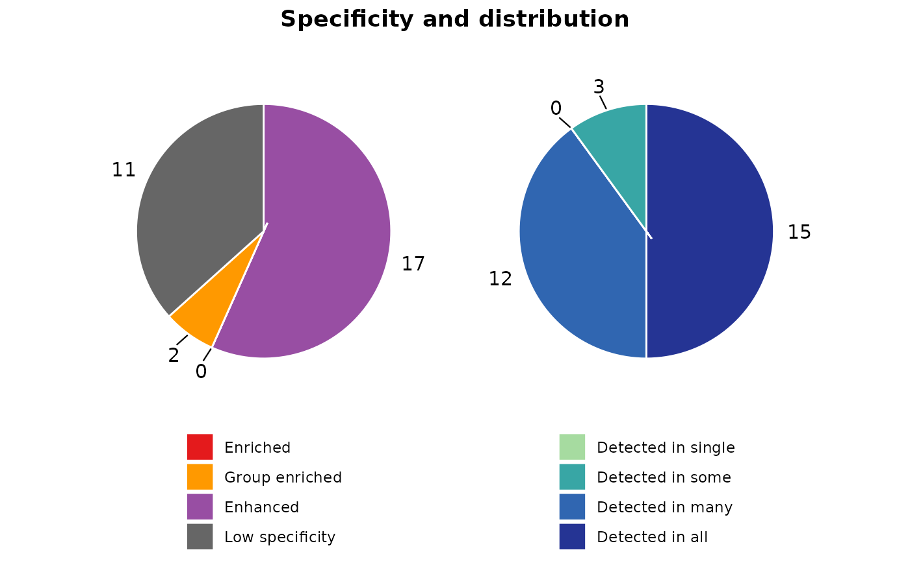
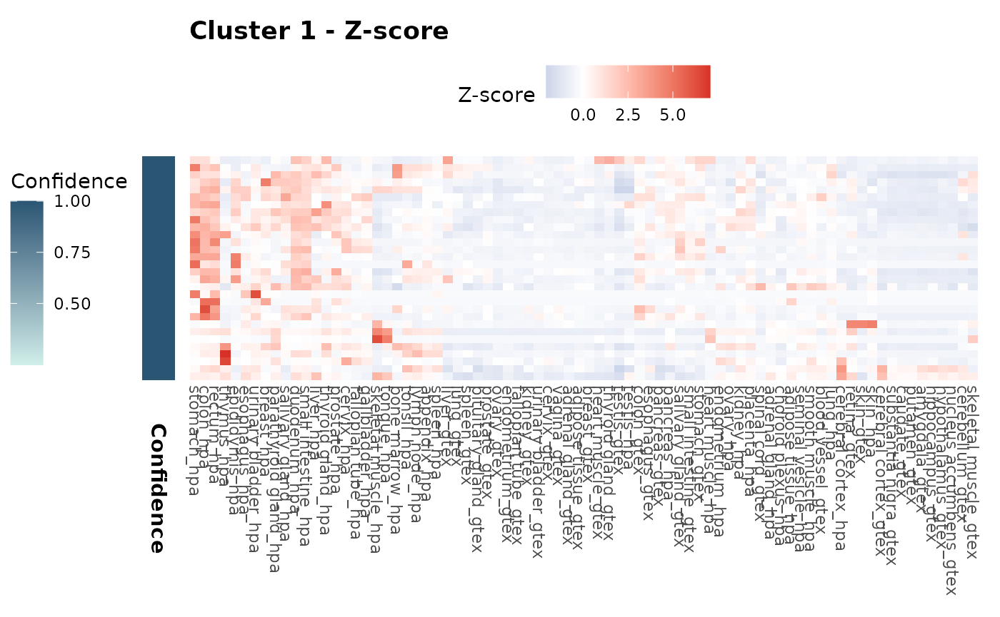
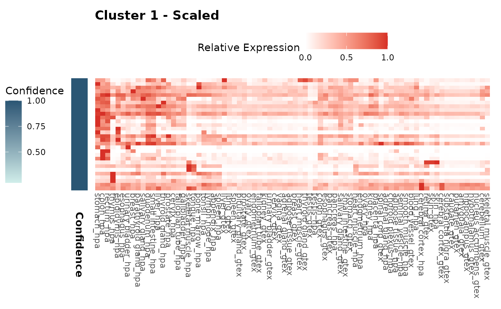
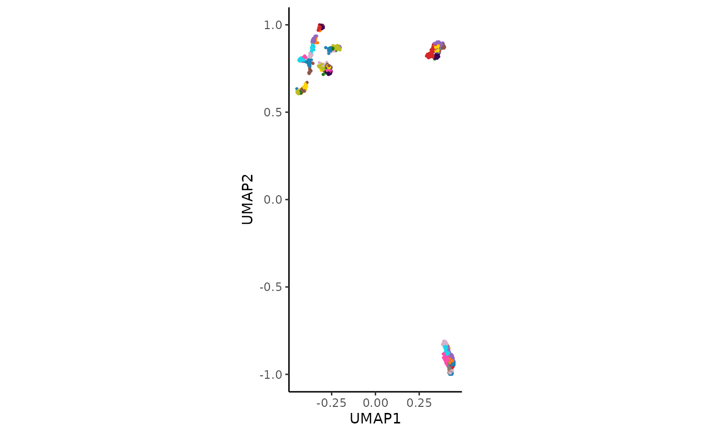
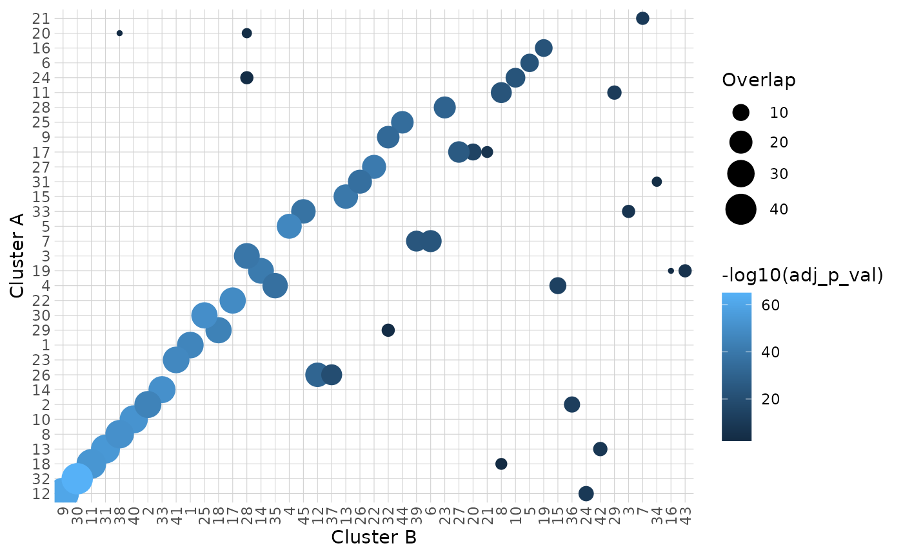
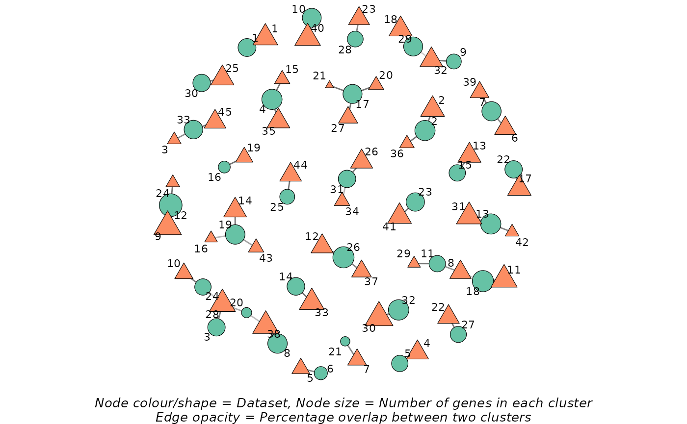

Introduction
HPAclusteR is an R package designed by the Human Protein
Atlas to streamline the process of gene clustering from transcriptomics
data. It provides a modular pipeline for performing PCA, calculating
distances, constructing shared nearest neighbor (SNN) graphs, consensus
clustering, UMAP, functional annotation, and different publication-ready
visualizations. The package is designed to work with AnnDatR objects, making
it easy to integrate into workflows for transcriptomics data
analysis.
Getting Started
To begin, load the HPAclusteR package:
We will use the built-in example_adata dataset for this
vignette. This dataset is a toy example designed to demonstrate the
functionality of the package.
💡 HPAclusteR can work with AnnDatR objects created using the AnnDatR package, as long as the data is transposed so that genes are the observations (rows) and samples are the variables (columns). Alternatively, you can use the hc_initialize() function to create a properly formatted object directly from your data frames.
Clustering Pipeline
💡 This part demonstrates the step-by-step usage of the
HPAclusteRpipeline. For users who prefer simplicity, thehc_auto_cluster()function can be used to run the entire pipeline in one call.
Step 1: Principal Component Analysis (PCA)
PCA is the first step in the pipeline, used to reduce the dimensionality of the data while retaining the most important features.
adata_res <- hc_pca(example_adata, components = 40)
head(adata_res$obsm$X_pca[, 1:5]) # PCA scores
#> PC1 PC2 PC3 PC4 PC5
#> ENSG00000002745 2.525134 1.244945 4.9524275 2.9628522 0.5502585
#> ENSG00000004660 -3.978987 4.237604 1.0125002 2.3806353 0.1701373
#> ENSG00000006047 -3.335958 -5.230821 0.2785071 -0.8539639 -1.0674333
#> ENSG00000006059 0.384914 -1.662885 4.2574866 1.7776202 0.3784697
#> ENSG00000006453 4.327132 -2.237923 2.0932705 -0.3790134 -5.5485171
#> ENSG00000006740 -3.499337 4.827055 -1.0947394 -0.6904189 -3.5299211
head(adata_res$uns$pca$r2cum) # Cumulative explained variance
#> [1] 0.2353205 0.4247893 0.5235696 0.6031322 0.6678779 0.7212278The PCA step reduces the dimensionality of the data to 40 components, which can be adjusted based on the dataset and analysis goals.
💡 If the expression matrix contains missing values,
hc_pca()reports how many and, by default, imputes them with their column mean so that the fast SVD path is used. Setna_action = "nipals"for the slower iterative algorithm that handles missing values directly, orna_action = "omit"to drop the affected genes.
Step 2: Distance Calculation
Next, we calculate the pairwise distances between samples using the
PCA-reduced data. The hc_distance() function supports
multiple distance metrics, such as “euclidean” and “spearman”. We will
use the number of components determined by Kaiser’s rule.
adata_res <- hc_distance(
adata_res,
components = hc_kaisers_rule(adata_res),
method = "spearman"
)
head(adata_res$uns$distance)
#> [1] 1.0090909 1.3363636 0.3363636 0.6090909 1.3454545 1.2454545Step 3: Shared Nearest Neighbor (SNN) Graph Construction
The SNN graph is constructed to identify clusters of similar samples. This step uses the distance matrix calculated in the previous step.
adata_res <- hc_snn(adata_res, neighbors = 15, prune = 1 / 15)
adata_res$uns$neighbors$snn[1:5, 1:5]
#> 5 x 5 sparse Matrix of class "dgCMatrix"
#> ENSG00000002745 ENSG00000004660 ENSG00000006047 ENSG00000006059
#> ENSG00000002745 1.00000000 . . 0.07142857
#> ENSG00000004660 . 1 . .
#> ENSG00000006047 . . 1 .
#> ENSG00000006059 0.07142857 . . 1.00000000
#> ENSG00000006453 . . . .
#> ENSG00000006453
#> ENSG00000002745 .
#> ENSG00000004660 .
#> ENSG00000006047 .
#> ENSG00000006059 .
#> ENSG00000006453 1The neighbors parameter controls the number of nearest
neighbors considered, while prune adjusts the sparsity of
the graph.
Step 4: Consensus Clustering
Consensus clustering is performed to identify robust clusters in the data. This step aggregates clustering results from multiple runs, in this case 100.
adata_res <- hc_cluster_consensus(
adata_res,
resolution = 8,
method = "louvain",
n_seeds = 100
)
head(adata_res$obs$cluster)
#> [1] "13" "8" "14" "13" "27" "8"The resolution parameter controls the granularity of the
clustering. Higher values result in more clusters.
Step 5: UMAP Visualization
UMAP is used to visualize the clusters in a low-dimensional space. This step provides an intuitive way to explore the clustering results. It uses the constructed SNN graph.
adata_res <- hc_umap(adata_res, verbose = FALSE)
head(adata_res$obsm$X_umap)
#> UMAP_1 UMAP_2
#> ENSG00000002745 -0.1701197 -0.7438677
#> ENSG00000004660 0.2096964 -0.8561486
#> ENSG00000006047 0.3996527 0.7626277
#> ENSG00000006059 -0.1950597 -0.7427994
#> ENSG00000006453 -0.2141915 -0.6715012
#> ENSG00000006740 0.2142968 -0.8946852Step 6: Cluster Hulls (Optional)
Cluster hulls are calculated to visualize the boundaries of each cluster in the UMAP plot.
adata_res <- hc_cluster_hulls(adata_res, poly_smoothing = 4)
head(adata_res$uns$UMAP_hulls$hulls)
#> # A tibble: 6 × 7
#> cluster sub_cluster sub_type landmass X Y polygon_id
#> <chr> <int> <chr> <int> <dbl> <dbl> <chr>
#> 1 15 1 primary 1 -0.376 -0.256 15_1_1
#> 2 15 1 primary 1 -0.390 -0.235 15_1_1
#> 3 15 1 primary 1 -0.411 -0.249 15_1_1
#> 4 15 1 primary 1 -0.418 -0.256 15_1_1
#> 5 15 1 primary 1 -0.418 -0.263 15_1_1
#> 6 15 1 primary 1 -0.404 -0.270 15_1_1Step 7: Visualization
Finally, we visualize the UMAP plot with clusters and hulls using the
hc_plot_umap() function.
hc_plot_umap(adata_res, plot = "both")
The plot argument can be set to "points",
"hulls", or "both" to customize the
visualization.
Cluster Annotation
In this part we will annotate our clusters using the KEGG database.
Users can use KEGG, GO or even other databases such as the Human Protein
Atlas, Panglao, Trrust and Reactome. Check hc_annotate()
for further details.
enrichment_res <- hc_annotate(
adata_res,
dbs = "KEGG",
verbose = FALSE
)
#> Warning in clusterProfiler::bitr(unique(clustering_data[["gene"]]), fromType =
#> "ENSEMBL", : 0.82% of input gene IDs are fail to map...
#> Warning in calculate_qvalue(ora_res$pvalue): qvalue::qvalue() failed, returning
#> NA for qvalue. Error: missing values and NaN's not allowed if 'na.rm' is FALSE
#> Warning in calculate_qvalue(ora_res$pvalue): qvalue::qvalue() failed, returning
#> NA for qvalue. Error: missing values and NaN's not allowed if 'na.rm' is FALSE
#> Warning in calculate_qvalue(ora_res$pvalue): qvalue::qvalue() failed, returning
#> NA for qvalue. Error: missing values and NaN's not allowed if 'na.rm' is FALSE
head(enrichment_res$enrichment)
#> # A tibble: 6 × 10
#> `Cluster ID` Database `Term ID` Term GeneRatio BgRatio `P-value`
#> <chr> <chr> <chr> <chr> <chr> <chr> <dbl>
#> 1 11 KEGG pathways hsa04814 Motor protei… 1/1 11/352 3.12e-2
#> 2 12 KEGG pathways hsa01100 Metabolic pa… 11/21 69/352 5.31e-4
#> 3 13 KEGG pathways hsa04382 Cornified en… 11/24 40/352 9.01e-6
#> 4 13 KEGG pathways hsa04519 Cadherin sig… 8/24 24/352 5.05e-5
#> 5 13 KEGG pathways hsa04915 Estrogen sig… 4/24 12/352 5.74e-3
#> 6 2 KEGG pathways hsa04660 T cell recep… 5/12 13/352 2.03e-5
#> # ℹ 3 more variables: `Adjusted P-value` <dbl>, `Gene IDs` <chr>,
#> # `Gene names` <chr>
enrichment_res$bubblemap_kegg
We can also perform gene classification within each cluster using the Human Protein Atlas (HPA) logic. This approach assigns specificity and distribution categories to genes based on their expression patterns across sample categories (e.g., tissues), providing insights into gene function and tissue specificity.
classify_res <- hc_classify(
adata_res,
sample_categories = "tissue_name"
)
head(classify_res$classification[["1"]])
#> # A tibble: 6 × 5
#> ENSG spec_category spec_sample_categories tau dist_category
#> <chr> <chr> <chr> <dbl> <chr>
#> 1 ENSG00000054219 Enhanced thymus;lymph node 0.7 Detected in many
#> 2 ENSG00000069974 Enhanced stomach;bone marrow 0.43 Detected in all
#> 3 ENSG00000077147 Low specificity NA 0.28 Detected in all
#> 4 ENSG00000079385 Enhanced colon;rectum 0.63 Detected in many
#> 5 ENSG00000081923 Enhanced colon;rectum;stomach 0.59 Detected in many
#> 6 ENSG00000101972 Low specificity NA 0.32 Detected in all
classify_res$pie_charts[["1"]]
We can visualize the gene expression patterns within each cluster using heatmaps. Both z-score and scaled expression heatmaps are generated for each cluster, allowing us to explore and compare gene expression profiles across different groups. The confidence of each cluster is also presented in the sidebar.
expr_heatmaps <- hc_plot_expression(adata_res)
expr_heatmaps$zscore[["1"]]
expr_heatmaps$scaled[["1"]]
Cluster Comparison
Finally, we can compare different clustering results using the
hc_cluster_compare() function. Here, we will create a
second clustering result with a different resolution and compare it to
the first result. This time we will use the
hc_auto_cluster() function for simplicity.
adata_res2 <- hc_auto_cluster(
example_adata,
cluster_resolution = 12,
verbose = FALSE
)
comparison_res <- hc_cluster_compare(
adata_res,
adata_res2,
graph_type = "bipartite"
)
comparison_res$heatmap
comparison_res$network
Conclusion
Explore the package further to uncover the full potential of your transcriptomics data!
💡 Remember that these data are an example toy-dataset with only a sample of the total protein-coding genes. The results in this guide should not be interpreted as real results. The purpose of this vignette is to show you how to use the package and its functions.
sessionInfo()
#> R version 4.6.1 (2026-06-24)
#> Platform: x86_64-pc-linux-gnu
#> Running under: Ubuntu 24.04.4 LTS
#>
#> Matrix products: default
#> BLAS: /usr/lib/x86_64-linux-gnu/openblas-pthread/libblas.so.3
#> LAPACK: /usr/lib/x86_64-linux-gnu/openblas-pthread/libopenblasp-r0.3.26.so; LAPACK version 3.12.0
#>
#> locale:
#> [1] LC_CTYPE=C.UTF-8 LC_NUMERIC=C LC_TIME=C.UTF-8
#> [4] LC_COLLATE=C.UTF-8 LC_MONETARY=C.UTF-8 LC_MESSAGES=C.UTF-8
#> [7] LC_PAPER=C.UTF-8 LC_NAME=C LC_ADDRESS=C
#> [10] LC_TELEPHONE=C LC_MEASUREMENT=C.UTF-8 LC_IDENTIFICATION=C
#>
#> time zone: UTC
#> tzcode source: system (glibc)
#>
#> attached base packages:
#> [1] stats graphics grDevices utils datasets methods base
#>
#> other attached packages:
#> [1] HPAclusteR_1.1.0
#>
#> loaded via a namespace (and not attached):
#> [1] DBI_1.3.0 gson_0.2.1 httr2_1.3.0
#> [4] rlang_1.3.0 magrittr_2.0.5 clue_0.3-68
#> [7] DOSE_4.6.0 otel_0.2.0 compiler_4.6.1
#> [10] RSQLite_3.53.3 png_0.1-9 systemfonts_1.3.2
#> [13] callr_3.8.0 vctrs_0.7.3 reshape2_1.4.5
#> [16] stringr_1.6.0 pkgconfig_2.0.3 crayon_1.5.3
#> [19] fastmap_1.2.0 XVector_0.52.0 labeling_0.4.3
#> [22] utf8_1.2.6 rmarkdown_2.31 enrichplot_1.32.0
#> [25] ps_1.9.3 ragg_1.5.2 purrr_1.2.2
#> [28] bit_4.6.0 xfun_0.60 cachem_1.1.0
#> [31] aplot_0.3.1 jsonlite_2.0.0 blob_1.3.0
#> [34] tidydr_0.0.6 tweenr_2.0.3 cluster_2.1.8.2
#> [37] parallel_4.6.1 R6_2.6.1 bslib_0.12.0
#> [40] stringi_1.8.9 RColorBrewer_1.1-3 enrichit_0.2.1
#> [43] jquerylib_0.1.4 GOSemSim_2.38.3 Rcpp_1.1.2
#> [46] Seqinfo_1.2.0 knitr_1.51 ggtangle_0.1.2
#> [49] IRanges_2.46.0 splines_4.6.1 Matrix_1.7-5
#> [52] igraph_2.3.3 aisdk_1.4.12 tidyselect_1.2.1
#> [55] qvalue_2.44.0 yaml_2.3.12 processx_3.9.0
#> [58] lattice_0.22-9 tibble_3.3.1 plyr_1.8.9
#> [61] withr_3.0.3 Biobase_2.72.0 treeio_1.36.1
#> [64] KEGGREST_1.52.2 S7_0.2.2 evaluate_1.0.5
#> [67] gridGraphics_0.5-1 desc_1.4.3 polyclip_1.10-7
#> [70] scatterpie_0.2.6 Biostrings_2.80.1 pillar_1.11.1
#> [73] ggtree_4.2.0 stats4_4.6.1 clusterProfiler_4.20.0
#> [76] ggfun_0.2.1 generics_0.1.4 S4Vectors_0.50.1
#> [79] ggplot2_4.0.3 scales_1.4.0 tidytree_0.4.8
#> [82] glue_1.8.1 gdtools_0.5.1 lazyeval_0.2.3
#> [85] tools_4.6.1 ggnewscale_0.5.2 RSpectra_0.16-2
#> [88] ggiraph_0.9.6 fs_2.1.0 grid_4.6.1
#> [91] tidyr_1.3.2 ape_5.8-1 AnnotationDbi_1.74.0
#> [94] nlme_3.1-169 patchwork_1.3.2 ggforce_0.5.0
#> [97] cli_3.6.6 rappdirs_0.3.4 textshaping_1.0.5
#> [100] fontBitstreamVera_0.1.1 dplyr_1.2.1 uwot_0.2.4
#> [103] gtable_0.3.6 yulab.utils_0.2.4 sass_0.4.10
#> [106] digest_0.6.39 fontquiver_0.2.1 BiocGenerics_0.58.1
#> [109] ggrepel_0.9.8 ggplotify_0.1.3 org.Hs.eg.db_3.23.1
#> [112] htmlwidgets_1.6.4 farver_2.1.2 memoise_2.0.1
#> [115] htmltools_0.5.9 pkgdown_2.2.1 lifecycle_1.0.5
#> [118] httr_1.4.8 GO.db_3.23.1 fontLiberation_0.1.0
#> [121] bit64_4.8.2 MASS_7.3-65